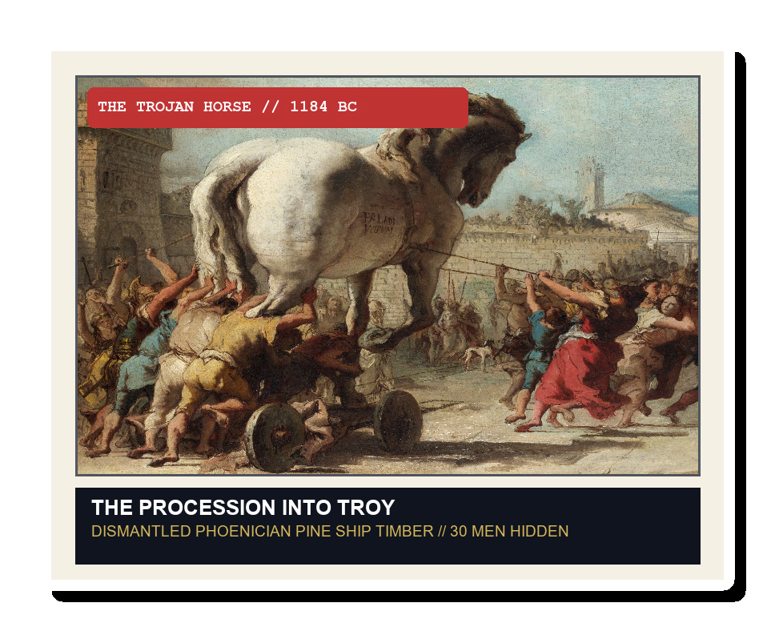
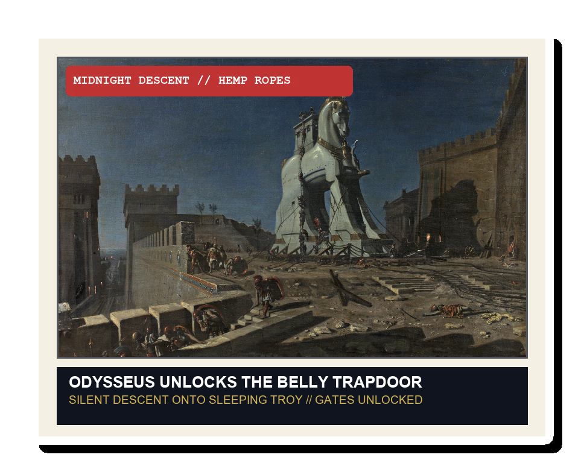
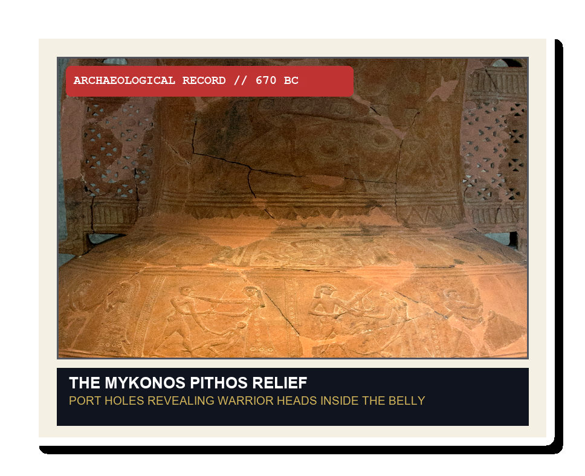

THE TROJAN HORSE (1184 BC)
2 NARROW TIERS
30 GREEK WARRIORS
INTERNAL BELLY TEMP
35°C / 95°F
SUFFOCATION THRESHOLD
CRITICAL (3 HRS)
DISGUISED VENTILATION // NOSTRILS & MANE CHANNELS
STRATAGEM OF ODYSSEUS // THE SIEGE OF TROY
HOW 30 MEN TOOK THE IMPREGNABLE CITY
30 GREEK SOLDIERS
TRAPPED IN 35°C HEAT
HOW DID THEY SURVIVE?



@IRinANutshell
Could you guess how thirty Greek soldiers survived inside the Trojan Horse before Troy burned?